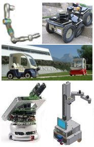

|
Course Description
Schedule & Materials
Line
Following Competition
Course Policies
General Study Tips
Important Links
Submission
Announcements
|
CSEN904: Introduction to Robotics
Course Lecturer
Dr. Alaa Khamis
Office hours: Saturday 5th
Slot
Course
Description:
|
Robotics challenges traditional
engineering disciplines because the integrated approach in the
selection of means to the intended functional ends must involve,
by nature, a team activity, and crossing the boundaries between
conventional engineering disciplines. Unlike traditional fields,
robotics is still an emerging area that combines the essential
elements of mechanical engineering, electrical engineering,
and computer science.
This course introduces the field
of robotics focusing on the practical issues of autonomous mobile
robots. In order to achieve a complete and balanced view on
robotics field, this course first presents the basic concepts
of robotics and covers evolution and history of robotics.
|
 |
The
interesting filed of industrial robotics is discussed addressing
the industrial robot's morphology, control systems and programming
techniques and applications. The course then presents the
theoretical and practical issues of autonomous mobile robots
making emphasis on how to build a real robot.
The
cornerstone of this course is a project in which a team of
students conceive, design and develop a microrobot in order
to participate in the GUC Line
Following Competition. Toys can be converted into working
robots. Students will be able to use Lego MindStorms starter
kits available at the GUC as the basis of this robot. They
can use the parts in the kits as is, or cannibalize them,
modifying them in the exact or approximate shape they need.
|
Topics covered in the course:
- Introduction to Robotics
- Fundamentals of industrial robotics
- Industrial robots' morphology, control,
programming and applications
- Introduction to mobile robotics
- Autonomous Intelligent Vehicles
- How to build a real robot
Recommended text books
1. P. J. McKerrow. Introduction to
Robotics. Addison-Wesley, ISBN: 0-201-18240-8, 1992.
2. G. McComb. The Robot Builder's Bonanza. TAB books, Division of
McGrae-Hill, ISBN: 0-8306-0800-1, 1987.
3. M. Ferrari, G. Ferrari and R. Heumpel. Building Robots with LEGO
Mindstorms. Syngress Publishing, 2002.
|